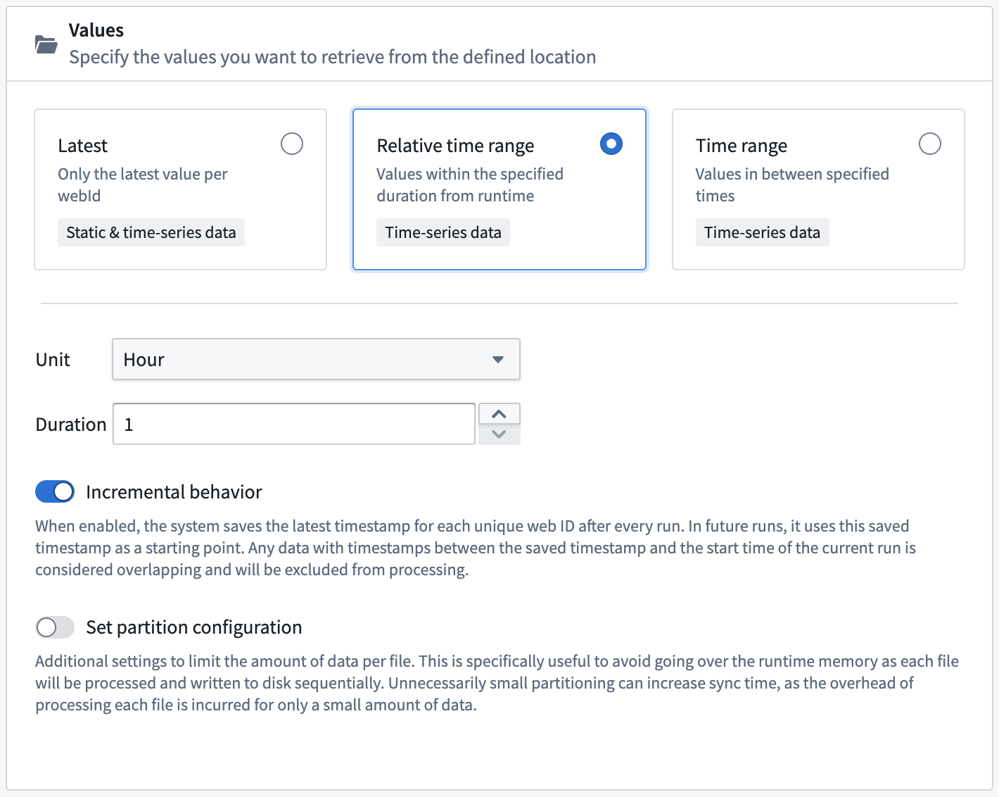
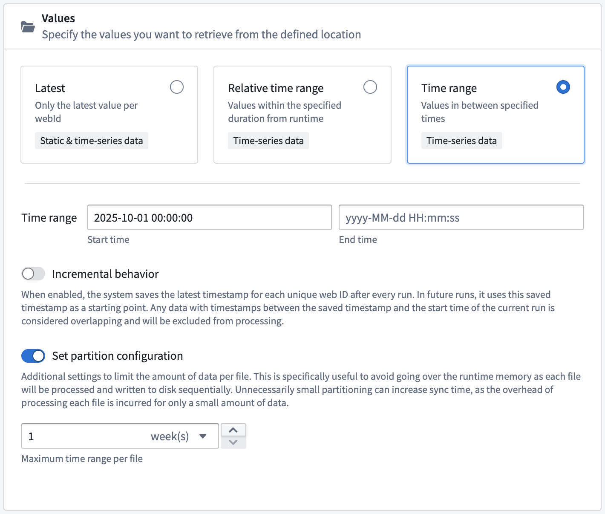
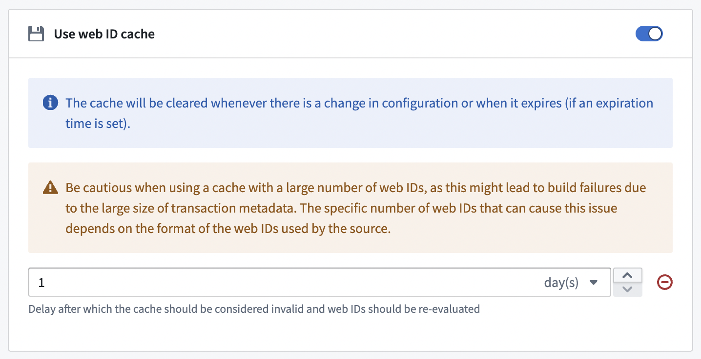
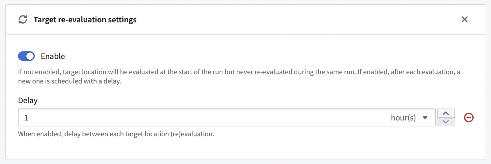
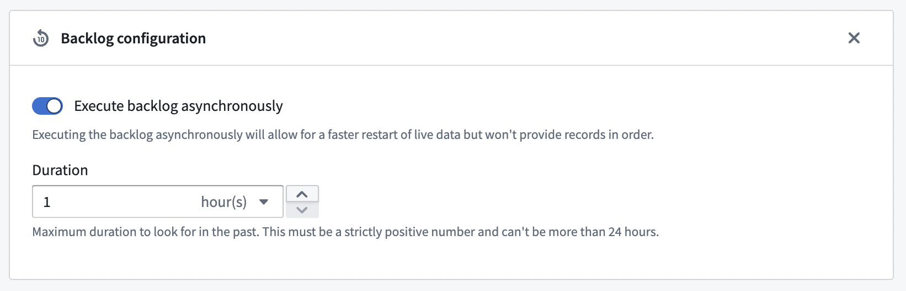

Connect Foundry to Aveva PI System (formerly known as OSIsoft PI Server) to read data.
| Capability | Status |
|---|---|
| Exploration | ð¡ Beta |
| Bulk import | ð¡ Beta |
| Incremental | ð¡ Beta |
| Streaming | ð¡ Beta |
| Export tasks | ð¡ Beta |
This connector leverages the PI Web API â.
Learn more about setting up a connector in Foundry.
You can authenticate to PI System in the following ways:
The connector (for instance, the agent when connecting through an agent) needs to have access to the Web API of the PI server. This is usually a connection over HTTPS (default port 443) to the provided URL.
The PI System connector works through the web API â and follows the concepts of streams and values â, unifying the data retrieval from attributes â with a data reference and PI points â. Each row in the target dataset will be a value with metadata (name, path, webID, and so on) from the associated stream.
Additionally, the PI System connector's use of the web API means that the value of an attribute backed by static input (as opposed to backed by tag data) cannot be retrieve through streaming or bulk retrieval with temporal value target, but can be retrieved via a latest value bulk sync.
You can choose from four different target location types to specify which stream should be synced:
Incremental configuration is available when retrieving values over an absolute or relative time window. When enabled, the system saves the latest timestamp for each unique WebID after each run. In future runs, the system uses this saved timestamp as a starting point. Data with timestamps between the saved timestamp and the start time of the current run are considered overlapping and will be excluded from processing.

You can set a partition configuration when retrieving values from an absolute or relative time window. When Set partition configuration is enabled, the PI System retrieves data within the configured window and sequentially writes the data to disk to avoid eclipsing runtime memory.

As described in the data model above, the first step is to resolve WebIDs â. This operation can be time consuming and repetitive if there were no changes on the PI server side. To speed up recurrent syncs, users can enable WebID caching to store resolved WebIDs and potentially re-use this cache on their next run.
There are two mechanisms to keep the cache up-to-date:

Streaming syncs use channels â to get timely updates from the server.
In order to confirm that the connection with the server is still active, the connector performs a liveness check on a regular basis to verify that an actual message or an empty message sent by the server (a "heartbeat") has been received recently. This allows the stream to be restarted, otherwise a new connection must be established if the previous one was silently closed.
On initial start, the connector will resolve WebIDs and store them in a cache. This cache will be used at restart in order to quickly restore the connection to the server. This cache is also re-evaluated periodically to get an up-to-date list of WebIDs. Users can disable this periodic re-evaluation or change its frequency.

Streams can stop and restart for multiple reasons, such as agent restart, lost connections, and manual cancellation. In these cases, there may be a small period of time before the connection is re-established. To avoid data gaps, users can enable a backlog to capture any data that was missed during this gap.

While the REST API connector may offer more flexibility in some cases, below are some advantages of using the PI connector.
User-friendly interface: The PI connector offers a point-and-click interface that only requires knowledge of PI concepts. In contrast, the REST API connector requires knowledge of the web API, different endpoints, and query formats to retrieve data for external transforms or regular syncs.
Ready-to-use data: PI connector syncs output tabular data that is already parsed and ready to use. The REST API outputs a JSON object that needs to be to parsed before use in downstream transforms. This requires additional knowledge of the response format.
Streaming syncs: The PI connector allows users to set up streaming syncs, which is not possible with the REST API.
"Smart" out-of-the-box functionality: As described in the batch functionalities section, the functionalities included in the PI connector allow users to perform operations that would otherwise require complex orchestration. The PI connector implicitly provides functionalities that can help users avoid common pitfalls, allowing for several levels of pagination and bucketing to efficiently and dynamically retrieve data. This is valuable for retrieving high volumes of data without hitting API rate limits, and is especially useful considering that the REST API's batch endpoint is likely to hit rate limits and silently fail.